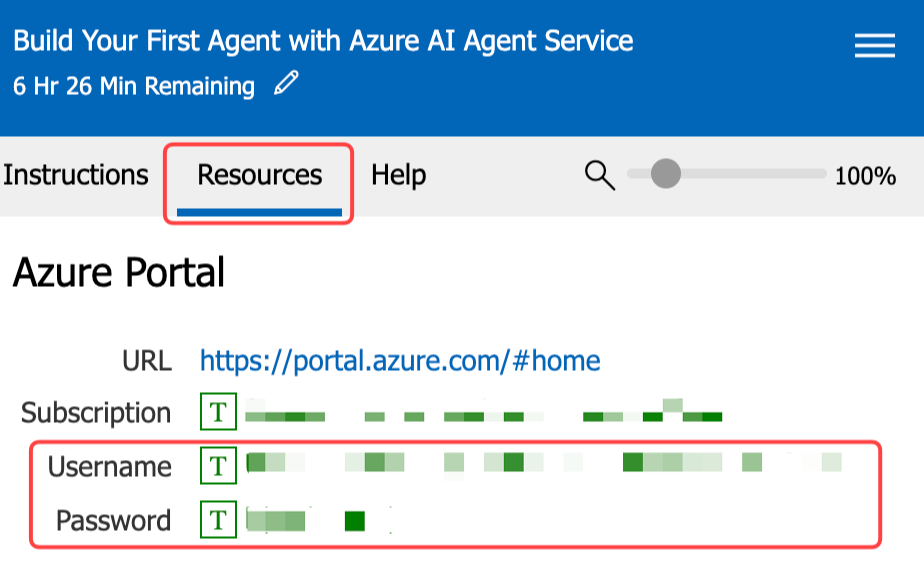

Introduction event
Microsoft Build Attendees¶
The instructions on this page assume you are attending Microsoft Build 2025 and have access to a pre-configured lab environment. This environment provides an Azure subscription with all the tools and resources needed to complete the workshop.
Introduction¶
This workshop is designed to teach you about the Azure AI Agents Service and the associated SDK. It consists of multiple labs, each highlighting a specific feature of the Azure AI Agents Service. The labs are meant to be completed in order, as each one builds on the knowledge and work from the previous lab.
Select Workshop Programming Language¶
The workshop is available in both Python and C#. Please make sure to select the language that fits the lab room you are in, by using the language selector tabs. Note, don't switch languages mid-lab.
Select the language tab that matches your lab room:
The default language for the workshop is set to Python.
The default language for the workshop is set to C#.
Authenticate with Azure¶
You need to authenticate with Azure so the agent app can access the Azure AI Agents Service and models. Follow these steps:
-
Open a terminal window. The terminal app is pinned to the Windows 11 taskbar.

-
Run the following command to authenticate with Azure:
az loginNote
You'll be prompted to open a browser link and log in to your Azure account.
-
A browser window will open automatically, select Work or school account and click Next.
-
Use the Username and Password found in the top section of the Resources tab in the lab environment.
-
Select OK, then Done.
-
-
Then select the Default subscription from the command line, by clicking on Enter.
-
Once you've logged in, run the following command to assign the user role to the resource group:
$subId = $(az account show --query id --output tsv) ` ;$objectId = $(az ad signed-in-user show --query id -o tsv) ` ; az role assignment create --role "f6c7c914-8db3-469d-8ca1-694a8f32e121" --assignee-object-id $objectId --scope /subscriptions/$subId/resourceGroups/"rg-agent-workshop" --assignee-principal-type 'User' -
Leave the terminal window open for the next steps.
Open the Workshop¶
Follow these steps to open the workshop in Visual Studio Code:
-
From the terminal window, execute the following commands to clone the workshop repository, navigate to the relevant folder, set up a virtual environment, activate it, and install the required packages:
git clone https://github.com/microsoft/build-your-first-agent-with-azure-ai-agent-service-workshop.git ` ; cd build-your-first-agent-with-azure-ai-agent-service-workshop ` ; python -m venv src/python/workshop/.venv ` ; src\python\workshop\.venv\Scripts\activate ` ; pip install -r src/python/workshop/requirements.txt ` ; code --install-extension tomoki1207.pdf -
Open in VS Code. From the terminal window, run the following command:
code .vscode\python-workspace.code-workspaceWhen the project opens in VS Code, two notifications appear in the bottom right corner. Click ✖ to close both notifications.
-
From a terminal window, execute the following commands to clone the workshop repository:
git clone https://github.com/microsoft/build-your-first-agent-with-azure-ai-agent-service-workshop.git
-
Open the workshop in Visual Studio Code. From the terminal window, run the following command:
code build-your-first-agent-with-azure-ai-agent-service-workshop\.vscode\csharp-workspace.code-workspace
When the project opens in VS Code, a notification will appear in the bottom right corner to install the C# extension. Click Install to install the C# extension, as this will provide the necessary features for C# development.
-
Open the workshop in Visual Studio 2022. From the terminal window, run the following command:
start build-your-first-agent-with-azure-ai-agent-service-workshop\src\csharp\workshop\AgentWorkshop.slnYou may be asked what program to open the solution with. Select Visual Studio 2022.
Project Connection String¶
Next, we log in to Azure AI Foundry to retrieve the project connection string, which the agent app uses to connect to the Azure AI Agents Service.
- Navigate to the Azure AI Foundry website.
- Select Sign in and use the Username and Password found in the top section of the Resources tab in the lab environment. Click on the Username and Password fields to automatically fill in the login details. 
- Read the introduction to the Azure AI Foundry and click Got it.
- Navigate to All Resources to view the list of AI resources that have been pre-provisioned for you.
-
Select the resource name that starts with aip- of type Project.
-
Review the introduction guide and click Close.
-
Locate the Project details section, click the Copy icon to copy the Project connection string.
{kind=link}
{kind=link}
{kind=link}
Configure the Workshop¶
- Switch back to the workshop you opened in VS Code.
-
Rename the
.env.samplefile to.env.- Select the .env.sample file in the VS Code Explorer panel.
- Right-click the file and select Rename, or press F2.
- Change the file name to
.envand press Enter.
-
Paste the Project connection string you copied from Azure AI Foundry into the
.envfile.PROJECT_CONNECTION_STRING="<your_project_connection_string>"Your
.envfile should look similar to this but with your project connection string.MODEL_DEPLOYMENT_NAME="gpt-4o" BING_CONNECTION_NAME="groundingwithbingsearch" PROJECT_CONNECTION_STRING="<your_project_connection_string>" -
Save the
.envfile.
Project Structure¶
Be sure to familiarize yourself with the key subfolders and files you’ll be working with throughout the workshop.
- The main.py file: The entry point for the app, containing its main logic.
- The sales_data.py file: The function logic to execute dynamic SQL queries against the SQLite database.
- The stream_event_handler.py file: Contains the event handler logic for token streaming.
- The shared/files folder: Contains the files created by the agent app.
- The shared/instructions folder: Contains the instructions passed to the LLM.

Configure the Workshop¶
-
Open a terminal and navigate to the src/csharp/workshop/AgentWorkshop.Client folder.
cd build-your-first-agent-with-azure-ai-agent-service-workshop\src\csharp\workshop\AgentWorkshop.Client -
Add the Project connection string you copied from Azure AI Foundry to the user secrets.
dotnet user-secrets set "ConnectionStrings:AiAgentService" "<your_project_connection_string>" -
Add the Model deployment name to the user secrets.
dotnet user-secrets set "Azure:ModelName" "gpt-4o"
Project Structure¶
Be sure to familiarize yourself with the key subfolders and files you’ll be working with throughout the workshop.
The workshop folder¶
- The Lab1.cs, Lab2.cs, Lab3.cs files: The entry point for each lab, containing its agent logic.
- The Program.cs file: The entry point for the app, containing its main logic.
- The SalesData.cs file: The function logic to execute dynamic SQL queries against the SQLite database.
The shared folder¶
- The files folder: Contains the files created by the agent app.
- The fonts folder: Contains the multilingual fonts used by Code Interpreter.
- The instructions folder: Contains the instructions passed to the LLM.
{kind=link}
Pro Tips¶
Tips
- The Burger Menu in the right-hand panel of the lab environment offers additional features, including the Split Window View and the option to end the lab. The Split Window View allows you to maximize the lab environment to full screen, optimizing screen space. The lab's Instructions and Resources panel will open in a separate window.
- If the lab instructions are slow to scroll in the lab environment, try copying the instructions’ URL and opening it in your computer’s local browser for a smoother experience.
- If you have trouble viewing an image, simply click the image to enlarge it.